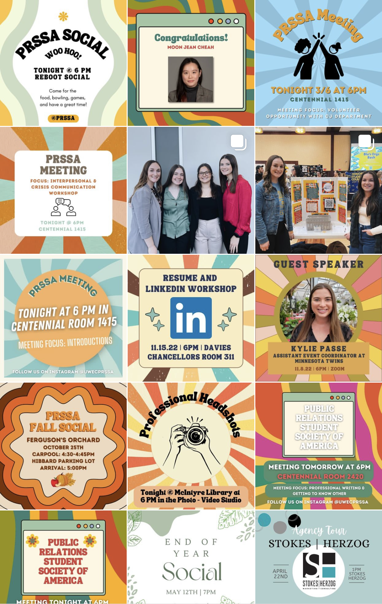
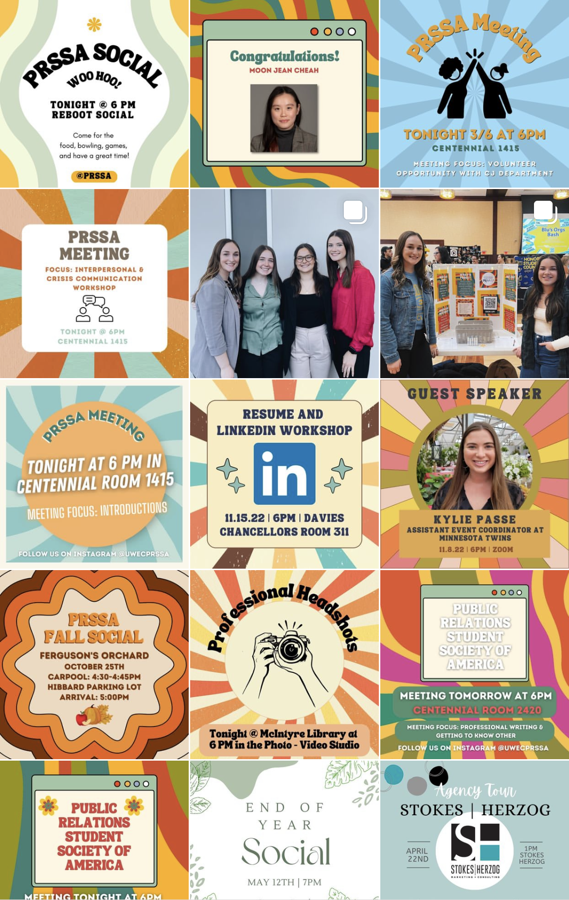

Welcome to My Portfolio
My name is Rachel Klinkner, and I am a content creator and social media specialist. Please take a look at some of the work I have created. Feel free to contact me, I would love to connect with you!
Passion & Goals
I am a farm girl by heart. I was born and raised on an organic dairy farm in rural Wisconsin near the LaCrosse area. My siblings and I were taught the lesson of responsibility, hard work, and problem solving at a young age. While in school, we would wake up, go to the barn, do our chores, get ready for school, go to extracurriculars, and then come home and help on the farm.
From growing up on a farm, to advocating for agriculture, and even creating content for the industry, I have developed a strong passion for the agricultural industry. As I continue my education and start my career, I wish to expand my knowledge and educate others about agriculture through content creation, communication, social media, and design.
Because of my strong passion for agriculture, I plan to work at an agricultural based company after my college graduation. Promoting and providing education about the industry is important to me and I want it to be a part of my career.
Work Experience
WISCONSIN FARM BUREAU FEDERATION FREELANCE WRITER | JANUARY 2023-PRESENT
- write agricultural blogs for the Wisconsin Farm Bureau Federation's website, Gather Wisconsin
- work with the director of media relations and outreach on agricultural campaigns and projects
MIDWEST FAMILY, EAU CLAIRE CONTENT CREATOR & AG ASSISTANT | JUNE 2021-PRESENT
- create content such as blogs, news articles, videos, and interviews for the Midwest Farm Report website
- create article posts, blogs, and update events on the Around the 715 website
- attend various agricultural events to promote the website and WAXX 104.5 radio station
BANK OF CASHTON SPECIAL PROJECTS & MARKETING COORDINATOR | JUNE 2022-AUGUST 2022
- developed marketing campaigns based on target audiences that the Bank of Cashton wanted to reach
- used marketing programs such as Constant Contact and Hootsuite to create monthly newsletters and social media content
SMALL BUSINESS DEVELOPMENT CENTER (SBDC) AT UW-EAU CLAIRE MARKETING & COMMUNICATIONS INTERN | DECEMBER 2021-MAY 2022
- assisted the marketing and accounting consultants at the SBDC with scheduling meetings with clients
- helped develop clients’ brand image for their business
- created social media posts for Facebook and Instagram
Education Background
University of Wisconsin-Eau Claire Eau Claire, WI | May 2024
Bachelor of Arts, Integrated Strategic Communications Major Multimedia Communications Minor, Emphasis in Advertising
Achievements & Leadership
- Dean's List: Spring 2021, Spring 2022, Fall 2022
- Equity Cooperative Scholarship - March 2022
- WI FFA Foundation - Farmer Community Giving, Organic Valley Scholarship - June 2020
- Public Relations Student Society of America (PRSSA) - President - 2021- Present
- Monroe County Jr. Fair Board - Member- 2022-Present
- University Activities Commission – Late Night Committee – 2021-2022
- Future Farmers of America (FFA) – Secretary, Vice President, President - 2014-2021
Gallery

 

Contact
Phone: (608) 487-5442
Email: klinkner.rachel@gmail.com